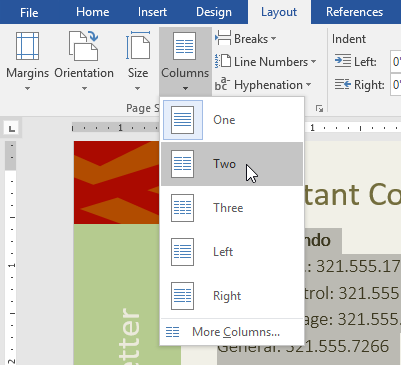
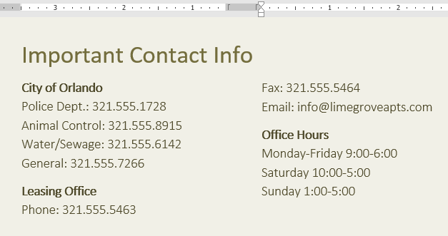
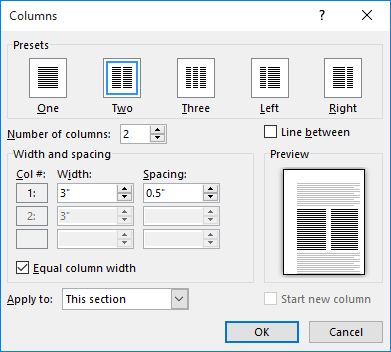
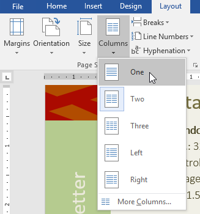
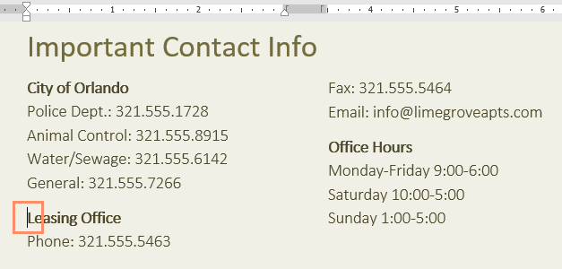
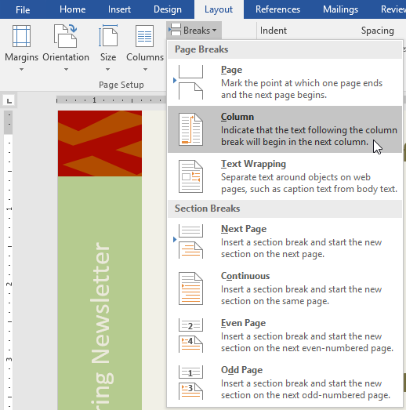
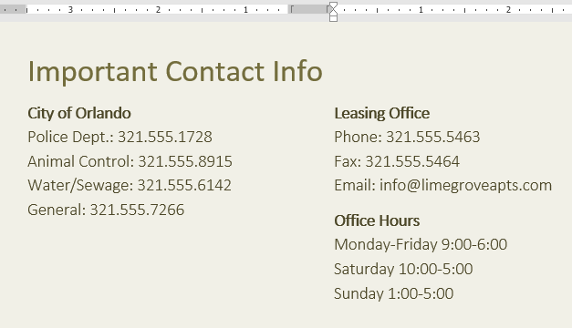
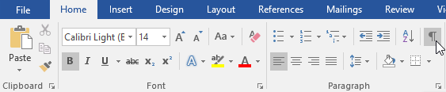
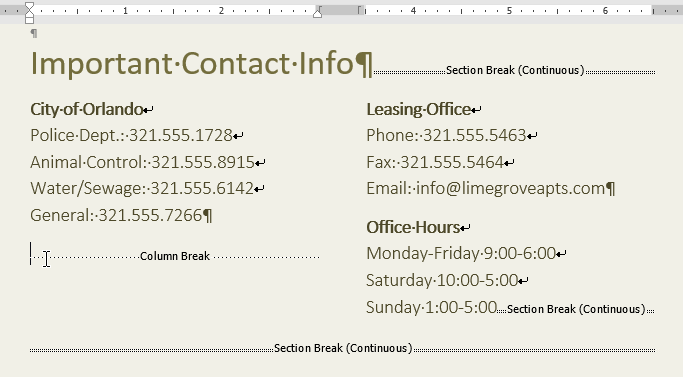
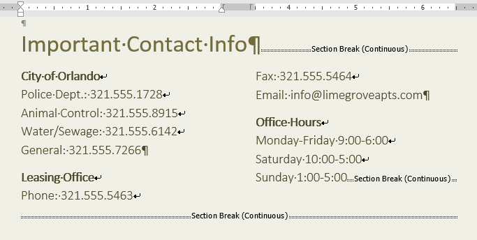

Introducere
Uneori, informațiile pe care le includeți în documentul dvs. sunt afișate cel mai bine în coloane. Coloanele pot ajuta la îmbunătățirea lizibilității, în special în cazul anumitor tipuri de documente, cum ar fi articole din ziare, buletine informative și fluturași. Word vă permite, de asemenea, să vă ajustați coloanele adăugând întreruperi de coloane.
Pentru a adăuga coloane la un document:- Selectați textul pe care doriți să îl formatați.
- Selectați fila Aspect, apoi faceți clic pe comanda Coloane. Va apărea un meniu derulant.
- Selectați numărul de coloane pe care doriți să le creați.
- Textul va fi format în coloane.
- Opțiunile pentru coloane nu se limitează la meniul drop-down care apare. Selectați Mai multe coloane în partea de jos a meniului pentru a accesa caseta de dialog Coloane. Faceți clic pe săgețile de lângă Număr de coloane: pentru a ajusta numărul de coloane.




Pentru a elimina formatarea coloanei, plasați punctul de inserare oriunde în coloane, apoi faceți clic pe comanda Coloane din fila Aspect. Selectați unul din meniul derulant care apare.

Adăugarea pauzelor de coloanăDupă ce ați creat coloanele, textul va curge automat de la o coloană la alta. Uneori, totuși, poate doriți să controlați exact unde începe fiecare coloană. Puteți face acest lucru creând o întrerupere de coloană.
Pentru a adăuga o întrerupere de coloană:În exemplul nostru de mai jos, vom adăuga o pauză de coloană care va muta textul la începutul coloanei următoare.
- Plasați punctul de inserare la începutul textului pe care doriți să îl mutați.
- Selectați fila Layout, apoi faceți clic pe comanda Breaks. Va apărea un meniu derulant.
- Selectați Coloană din meniu.
- Textul se va muta la începutul coloanei. În exemplul nostru, s-a mutat la începutul coloanei următoare.



- În mod implicit, pauzele sunt ascunse. Dacă doriți să afișați pauzele în documentul dvs., faceți clic pe comanda Afișare/Ascunde din fila Acasă.
- Plasați punctul de inserare în stânga pauzei pe care doriți să o ștergeți.
- Apăsați tasta de ștergere pentru a elimina pauza.


